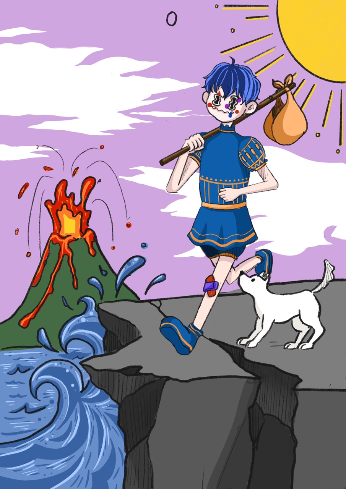

The fool
미지의 세계를 향한 내면의 충동, 비이성적 충동, 동물적 본능, 야성적, 광기, 변화, 직관, 젊고 창조적인 교감
디오니소스의 광기는 우리 내면의 성정에 비춘 것이기에 미친 것처럼 보인다.
보다 심원한 관점에서 본다면 결코 미친 것이 아니다.
왜냐하면 그것은 어느 날 갑자기 닥쳐온 변화, 그래서 행동을 위한 이성적 계획 없이 벌어지는 변화를 향한 본능적 충동이기 때문이다.
디오니소스는 가죽으로 만든 옷을 입고 있다. 인성의 직관적, 초이성적 차원은 일종의 육감이나 동물적 본능과도 같다.
것은 구체적인 사물에 익숙한, 닳아빠진 귀로는 파장을 맞출 수 없는 음악을 듣게 해준다.
디오니소스는 신들의 왕 제우스의 아들이다. 그러므로 그가 교감하는 것은 제우스의 영(靈)이다.
비록 그가 지상에서 인간들과 함께 살아야 할 운명이긴 하지만 말이다. 그러나 이러한 충동이 우리를 자극할 때, 제우스가 있는 천상으로부터 오는 것인지 아니면 어두운 하계로부터 오는 것인지는 알기 어렵다
광대는 매우 양면적인 존재이다. 왜냐하면 그러한 여행의 출발점에서 우리가 안전하게 목표에 도달할는지 아닌지를 전혀 보장할 수 없기 때문이다.
그렇다고 출발하지 않는다면 디오니소스를 부정하는 것이다.
말하자면, 내면에 있는 젊고 창조적인 부분, 자신보다 더 위대한 부분과의 교감을 부정하는 것이 된다.